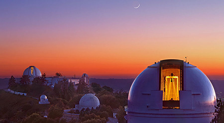

Regents approve of Student Housing West, Kresge renewal
By Scott Hernandez-Jason and Dan White
April 1, 2019
The UC Board of Regents have approved two major projects that are aimed
at improving the student experience at UC Santa Cruz by offering more campus housing
options and revitalizing aging facilities.
Last month, the Board of Regents have approved the
renewal of Kresge College and Student Housing West.
The Kresge College renewal aims to update the
residential college through a mix of new construction and renovation to meet the needs of
today's student body.
Student Housing West will create 3,072 new beds at two
sites, one along Heller Drive, the other along Hagar Drive. Additionally, it will provide a new
childcare facility that will be able to extend service to the children of faculty and staff,
in addition to students.

A rendering of the new academic building and Kresge College
entrance from the north pedestrian bridge.
(Rendering by Studio Gang)
Drink water and save the world!
Drinking water is better for your health than drinking olive oil, and besides, it's cheaper too!Get a sidecar bike!
Do you have a friend who you would like to go around with, but who's too lazy for pedaling? Get a bike with sidecar at SideCarBikes.comSummer programs draw visitors to Lick Observatory for music and stargazing
By Tim Stephens
March 25, 2019
For over 35 years, the Summer Series progarm at UC's Lick Observatory has drawn concert fans and
astronomy devotees to the summit of Mt. Hamilton for live music, even astronomy lectures from
world-renowned scientists, and the opportunity to view celestial objects through historic
telescopes.

Sunset over Lick Observatory with open domes. (Photo by Laurie Hatch)